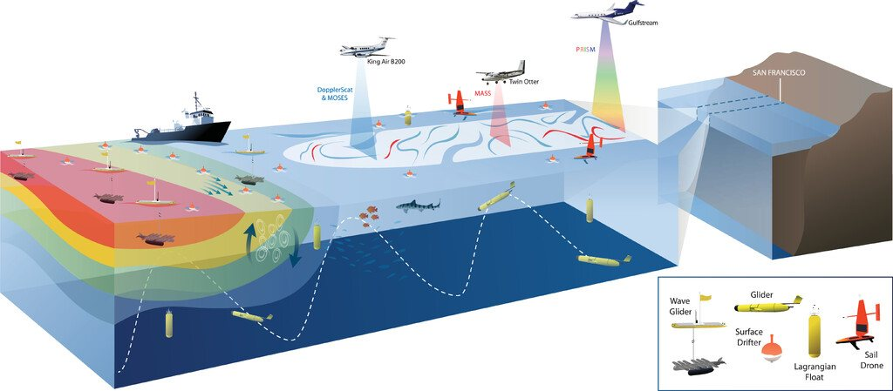
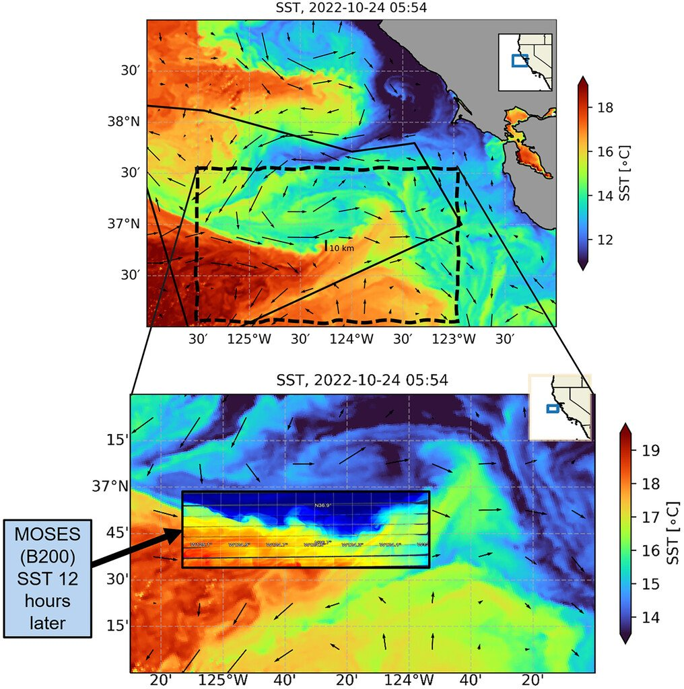

SWOT
Validation of sea surface height measurements at sub-100 km scales, and scale-aware connections between remote sensing and in situ observing networks.
- Fu et al. (2024), GRL
- Wang et al. (2025), GRL
- Kachelein et al. (2025), JGR
This page keeps the same content scope as the current research page, but organizes it with more narrative framing and fewer long uninterrupted stacks. Each section has one job: explain a domain, show evidence, and point to representative work.

SWOT, S-MODE, tropical dynamics, and upper-ocean observing systems form the clearest top-level map of the portfolio.
Validation of sea surface height measurements at sub-100 km scales, and scale-aware connections between remote sensing and in situ observing networks.
Coordinated airborne, shipboard, and autonomous observations designed to resolve submesoscale ocean dynamics and vertical exchange in the upper ocean.
Process studies in the Bay of Bengal, Red Sea, and Pacific using moorings, drifters, and coordinated field campaigns to understand upper-ocean structure, mixing, and intraseasonal variability.
Wave Gliders, Saildrones, and related systems used for ocean-atmosphere fluxes, currents, and submesoscale observations.


The existing research page is informative, but it reads as one long vertical report. This version spaces the material into clearer modules so visitors can scan by program before they commit to reading details.
Each program block could become its own landing page with selected papers, figures, datasets, and collaborators without changing the overall visual system.